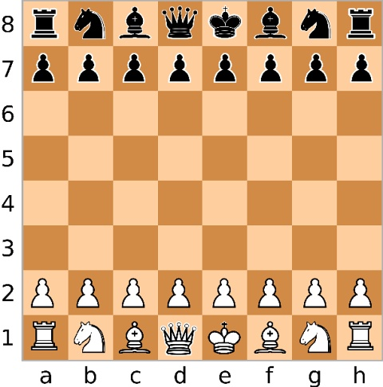

Historique
Ce jeu de société trouve son origine dans un ancien jeu appelé Chaturanga qui signifie "quatre divisions de l'armée" (infanterie, cavalerie, éléphants et chars) en Inde antique au VIe siècle. Puis il y a eu la propagation en Perse vers le VIIe sciècle où les pièces prirent des formes proches de celles qu'on connaît aujourd'hui. Le roi était appelé "Shah" et le terme "échec" vient de "Shah", qui signifie roi. En outre le roi est attaqué par une pièce adverse. Le terme "échec et mat" vient du mot persan "Shah Mat" qui veut dire que "le roi est mort". Enfin entre le Xspan>e - XIVspan>e sciècle les échecs arrivèrent en Europe par l'Espagne et l'Italie grâce aux échanges commerciaux avec le monde Arabe. Certaines règles ont été modifiées: le fou et la dame ont acquis leurs mouvements modernes. Vers le XVe - XVIe sciècle la dame devient la pièce la plus puissante, les parties rapides et le roque sont introduits, Les échecs deviennent un jeu de stratégie noble, pratiqué par la royauté et les élites.
Vers le XIXe siècle: les premiers tournois internationaux apparaissent. En 1886: le premier championnat du monde officiel entre Whilhelm Steinitz et Johannes Zukertort. XXe sciècle: les échecs deviennent un sport mondial avec la création de la FIDE (Fédération Internationale des Echecs) en 1924. En 1972: Le match Fischer vs Spassky popularise les échecs dans le monde occidental. Actuellement les échecs sont à la fois compétition, loisir et outil éducatif, avec des versions en ligne et des tournois internationaux.
Principe du jeu d'échec
Ce jeu se joue entre deux joueurs sur un échiquier de 64 cases qui est colorés en noir et blanc (en général) en alternance. Où les blancs sont dans les rangées 1 et 2 tandis que les noirs dans les rangées 7 et 8. Enfin chaque joueur doit avoir à sa droite une case blanche dans l'extrémité.

Les blancs commencent toujours la partie, puis les noirs jouent à leur tour. Les joueurs disposent du même nombre de pièces (16 chacun) et celle-ci sont symétriquement alignées (8 pions, 2 tours, 2 cavaliers, 2 fous, 1 dame et 1 roi).
Le roi est la pièce placée dans la colonne E. Les dames sont toujours sur la case de sa couleur (colonne D). Les autres pièces sont placées de la manière suivante: les tours occupent les coins car parmi les trois (tour, cavalier, fou) il est le plus fort. Symbolisant la partie du château où il y a le plus de garde. Près des tours se trouvent les cavalier car dans les vrais châteaux les écuries sont toujours près des tours pour symboliser les chevaliers. Enfin les fous qui se placent près du roi et de la dame comme conseillers ou officiers réligieux. Les pions sont placés dans la deuxième rangée pour les blancs et la séptième pour les noirs.
L'objectif dans ce jeu consiste à capturer le roi adverse en l'immobilisant (plus de mouvements possibles et en état d'échec); c'est ce qu'on appelle échec et mat.
| Pièces | Mouvements | Coups spéciaux |
|---|---|---|
| Roi | 1 case dans toutes les directions | Roque: échange de place avec une tour. Autorisé si ni le roi ni la tour n'ont bougé et s'il n'y a pas d'échec ni d'obstacle. |
| Dame | Toutes directions (horizontal, vertical, diagonale) | Aucun. |
| Tour | Horizontal ou vertical, autant de case que voulu | Roque: voir le roi. |
| Fou | Diagonale sur n'importe quelle distance | Aucun. |
| Cavalier | En "L": 2 cases dans une direction + 1 perpendiculaire | Aucun. |
| Pion | 1 case en avant (ou 2 cases au premier coup), prise en diagonale d'une case, après se mouvoit en avant et ainsi de suite | Prise en passant: capture spéciale juste après qu'un pion adverse a avancé de 2 cases à côté du sien. Promotion: en atteignant la dernière rangée, le pion devient une autre pièce (souvent une dame); mais ne peut être promu en un roi |
Les avantages liés aux échecs dans le domaine de l'éducation
Le fait de pratiquer ce jeu permet:
- l'amélioration de la capacité à se concentrer ainsi que de notre patience.
- la stimulation de notre cerveau voire même un accroissement de notre intellect.
- d'offrir un meilleur esprit d'analyse et de développer les compétences en matiére de décision.
- le renforcement des fonctions cognitives comme: la planification, le contrôle de l'impulsivité, la flexibilité mentale.
- aide beaucoup à la mémorisation (surtout mémoire visuelle).
- le développement de la créativité dans la résolution de problèmes ainsi que l'esprit critique.
Il s'est avéré être que le jeu d'échec octroie des effets positifs dans certaines matières comme:
- Les mathématiques
- Langues
- Sciences
Le top 10 des joueurs mondiaux (elo)
- 1- Magnus Carlsen - 2840
- 2- Hikaru Nakamura - 2810
- 3- Fabiano Caruano - 2795
- 4- Vincent Keymer - 2776
- 5- Arjun Erigaisi - 2775
- 6- Anish Giri - 2760
- 7- Alireza Firouzja - 2759
- 8- R. Praggnanandhaa - 2766
- 9- Gukesh Dommaraju - 2754
- 10- Wei Yi - 2754